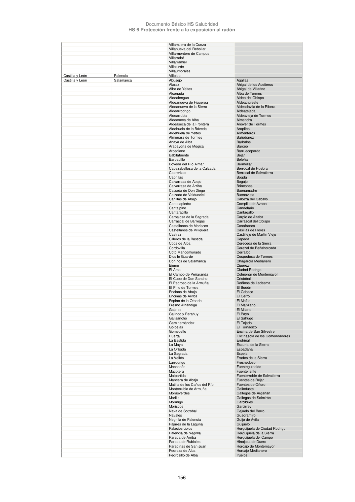

DB-HS Salubridad · edición 2022-06-14 · capa oficial
Documento DB-HS-oficial · SHA-256 del PDF 68df3caacc95f71aee2ec1ba7b2c65ae66155c21e3a8785521b8fdd4fd640d3b
Página física 156 de 184.
Copia fiel del PDF fuente · Fuente oficial
Ficha de la disposición en la fuente oficial
Formato: Texto de la página (Markdown)
Documento Básico HS Salubridad HS 6 Protección frente a la exposición al radón 156 Villamuera de la Cueza Villanueva del Rebollar Villarmentero de Campos Villarrabé Villarramiel Villaturde Villaumbrales Castilla y León Palencia Villoldo Castilla y León Salamanca Abusejo Agallas Alaraz Ahigal de los Aceiteros Alba de Yeltes Ahigal de Villarino Alconada Alba de Tormes Aldealengua Aldea del Obispo Aldeanueva de Figueroa Aldeacipreste Aldeanueva de la Sierra Aldeadávila de la Ribera Aldearrodrigo Aldeatejada Aldearrubia Aldeavieja de Tormes Aldeaseca de Alba Almendra Aldeaseca de la Frontera Añover de Tormes Aldehuela de la Bóveda Arapiles Aldehuela de Yeltes Armenteros Almenara de Tormes Bañobárez Anaya de Alba Barbalos Arabayona de Mógica Barceo Arcediano Barruecopardo Babilafuente Béjar Barbadillo Beleña Bóveda del Río Almar Bermellar Cabezabellosa de la Calzada Berrocal de Huebra Cabrerizos Berrocal de Salvatierra Cabrillas Boada Calvarrasa de Abajo Bogajo Calvarrasa de Arriba Brincones Calzada de Don Diego Buenamadre Calzada de Valdunciel Buenavista Canillas de Abajo Cabeza del Caballo Cantalapiedra Campillo de Azaba Cantalpino Candelario Cantaracillo Cantagallo Carbajosa de la Sagrada Carpio de Azaba Carrascal de Barregas Carrascal del Obispo Castellanos de Moriscos Casafranca Castellanos de Villiquera Casillas de Flores Castraz Castillejo de Martín Viejo Cilleros de la Bastida Cepeda Coca de Alba Cereceda de la Sierra Cordovilla Cerezal de Peñahorcada Coto Mancomunado Cerralbo Dios le Guarde Cespedosa de Tormes Doñinos de Salamanca Chagarcía Medianero Ejeme Cipérez El Arco Ciudad Rodrigo El Campo de Peñaranda Colmenar de Montemayor El Cubo de Don Sancho Cristóbal El Pedroso de la Armuña Doñinos de Ledesma El Pino de Tormes El Bodón Encinas de Abajo El Cabaco Encinas de Arriba El Cerro Espino de la Orbada El Maíllo Fresno Alhándiga El Manzano Gajates El Milano Galindo y Perahuy El Payo Galisancho El Sahugo Garcihernández El Tejado Golpejas El Tornadizo Gomecello Encina de San Silvestre Huerta Encinasola de los Comendadores La Bastida Endrinal La Maya Escurial de la Sierra La Orbada Espadaña La Sagrada Espeja La Vellés Frades de la Sierra Larrodrigo Fresnedoso Machacón Fuenteguinaldo Macotera Fuenteliante Malpartida Fuenterroble de Salvatierra Mancera de Abajo Fuentes de Béjar Matilla de los Caños del Río Fuentes de Oñoro Monterrubio de Armuña Galinduste Morasverdes Gallegos de Argañán Morille Gallegos de Solmirón Moríñigo Garcibuey Moriscos Garcirrey Nava de Sotrobal Gejuelo del Barro Navales Guadramiro Negrilla de Palencia Guijo de Ávila Pajares de la Laguna Guijuelo Palaciosrubios Herguijuela de Ciudad Rodrigo Palencia de Negrilla Herguijuela de la Sierra Parada de Arriba Herguijuela del Campo Parada de Rubiales Hinojosa de Duero Paradinas de San Juan Horcajo de Montemayor Pedraza de Alba Horcajo Medianero Pedrosillo de Alba Iruelos

Datos candidatos: compruebe celdas y notas en el PDF.